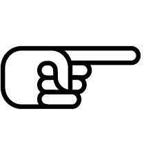

Üdvözöllek saját oldalamon!
Ezen a webhelyen tudhattok meg rólam többet, mely az IKT projektmunka tantárgyra készült házifeladat gyanánt. Jó olvasást kívánok!
Farkas Bence
Menüpontok

Alap adatok
Tanulmányaim
Hobbik
Célkitűzések